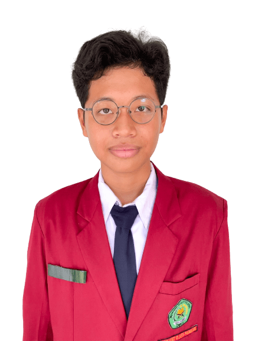
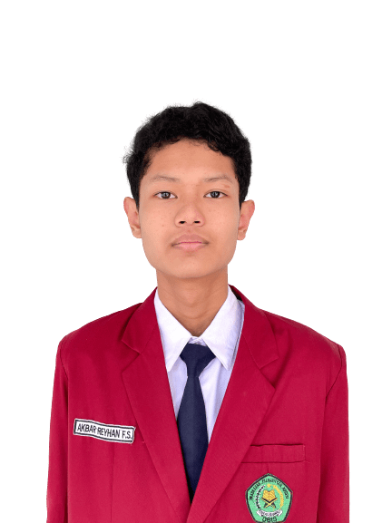

*KoPSI
KoPSI atau singkatan dari Kompetisi Penelitian Siswa Indonesia merupakan kompetisi tahunan yang diadakan oleh Pusat Prestasi Nasional (Puspresnas). Kompetisi ini bertujuan untuk meningkatkan budaya meneliti di kalangan siswa.
Walaupun sempat vakum selama 3 tahun dan berganti nama dari Olimpiade Penelitian Siswa Indonesia (OPSI) menjadi KoPSI, kompetisi ini tetap menjadi kompetisi penelitian bergengsi untuk kalangan siswa SMP dan SMA seluruh Indonesia.
* Final KoPSI 2021
Terdapat 40 finalis bidang Ilmu Pengetahuan Teknik dan Rekayasa yang akan berkompetisi di tahap nasional. Salah satu tim yang lolos ke dalam tahap nasional ialah “IGoS” Sebagai Alat Pencegah Insomnia Berkonsep Kacamata Tidur Berbasis Wemos D1.
* Tujuan Website
Pembuatan website ini merupakan bagian dari sistematika kerja Perangkat IGoS yang berbasis IoT (Intenet of Things). Diharapkan dengan adanya website ini, para pengguna dapat mengoperasikan dan menggunakan perangkat IGoS dengan lebih mudah.
* Profil Peneliti
KoPSI atau singkatan dari Kompetisi Penelitian Siswa Indonesia merupakan kompetisi tahunan yang diadakan oleh Pusat Prestasi Nasional (Puspresnas). Kompetisi ini bertujuan untuk meningkatkan budaya meneliti di kalangan siswa.
Walaupun sempat vakum selama 3 tahun dan berganti nama dari Olimpiade Penelitian Siswa Indonesia (OPSI) menjadi KoPSI, kompetisi ini tetap menjadi kompetisi penelitian bergengsi untuk kalangan siswa SMP dan SMA seluruh Indonesia.
* Final KoPSI 2021
Terdapat 40 finalis bidang Ilmu Pengetahuan Teknik dan Rekayasa yang akan berkompetisi di tahap nasional. Salah satu tim yang lolos ke dalam tahap nasional ialah “IGoS” Sebagai Alat Pencegah Insomnia Berkonsep Kacamata Tidur Berbasis Wemos D1.
* Tujuan Website
Pembuatan website ini merupakan bagian dari sistematika kerja Perangkat IGoS yang berbasis IoT (Intenet of Things). Diharapkan dengan adanya website ini, para pengguna dapat mengoperasikan dan menggunakan perangkat IGoS dengan lebih mudah.
* Profil Peneliti
|

Muhammad Kevin Nur Zaky Muhammad Kevin Nur Zaky lahir pada 27 Juni 2006. Kevin adalah seorang siswa MTsN 2 Kota Kediri. Ketertarikannya mengutak-atik mainan sejak kecil membuatnya menekuni dunia teknik sederhana saat MTs. Ia menyalurkan ketertarikannya tersebut melalui kegiatan KIR di sekolahnya. Setelah gagal berulang kali dalam mengikuti kompetisi penelitian, Kevin mencoba untuk berpartner dengan teman semasa sekolah dasarnya, Reyhan. |

Akbar Reyhan Fabian Susanto Akbar Reyhan Fabian Susanto lahir pada 18 Januari 2007. Reyhan adalah seorang siswa MTsN 2 Kota Kediri. Kegemarannya dalam menggambar dan bermain game membuatnya mengenal lebih banyak jenis desain. Pertama kali untuk dirinya mengikuti kompetisi penelitian ialah untuk membantu temannya mewujudkan impian. |